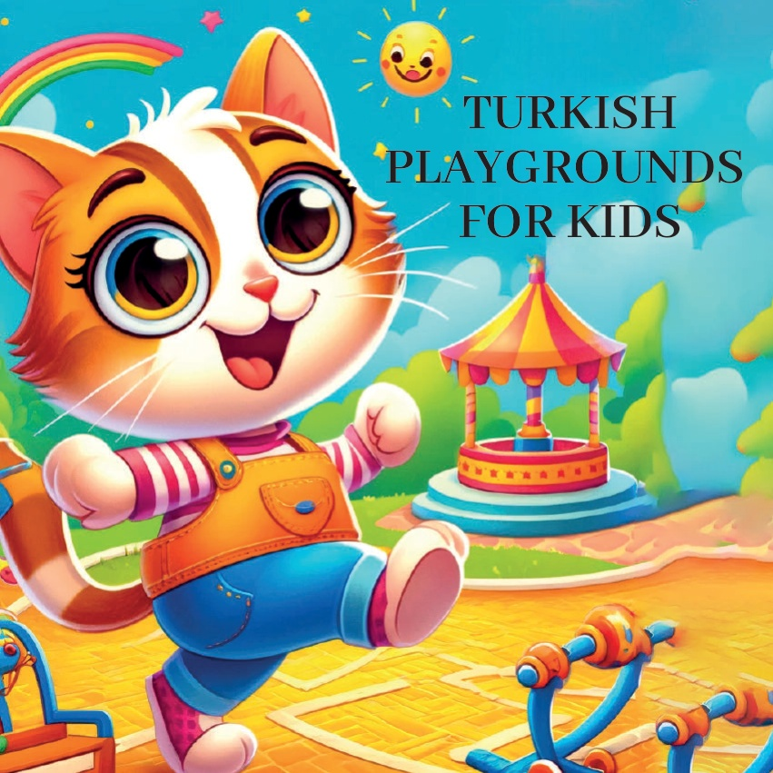
1

2

3
Odată ca într-o lume,
a existat o pisicuță jucăușă pe nume Karamel
care adora să exploreze diferite jocuri
și activități. Într-o zi,
a decis să viziteze diverse
parcuri de joacă din Türkiye pentru a afla
despre jocurile tradiționale cu care se joacă copiii.
4
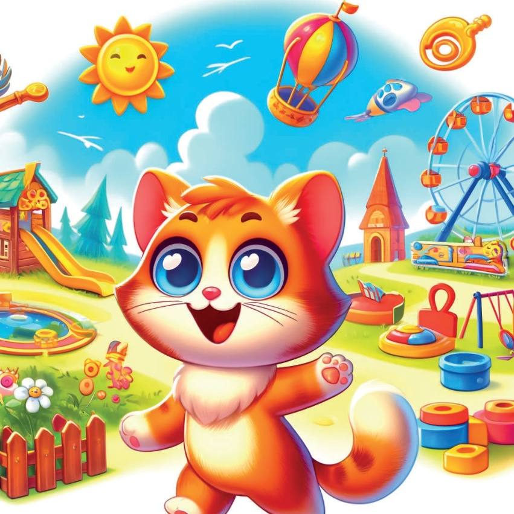
5
Regiunea Marmara - Istanbul:
Körebe
Prima oprire a lui Karamel a fost Istanbul,
unde s-a alăturat copiilor care jucau Körebe,
un joc în care un copil este bandat la ochi
și încearcă să prindă pe ceilalți.
A fost o plăcere să aud râsetele și entuziasmul.
6
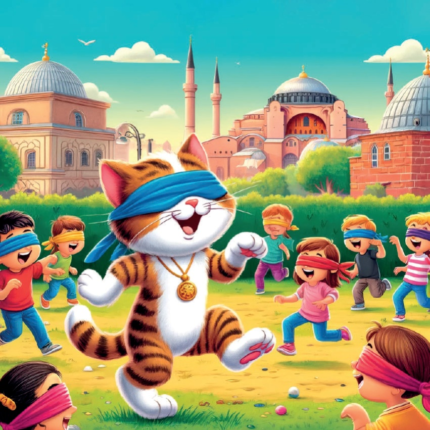
7
Regiunea Egeus - İzmir:
Dodgeball
Apoi, Karamel a călătorit la İzmir,
unde s-a alăturat unui grup de copii care jucau
Yakan Top.
Copiii erau agili,
evazând și aruncând cu mingi cu multă energie.
8
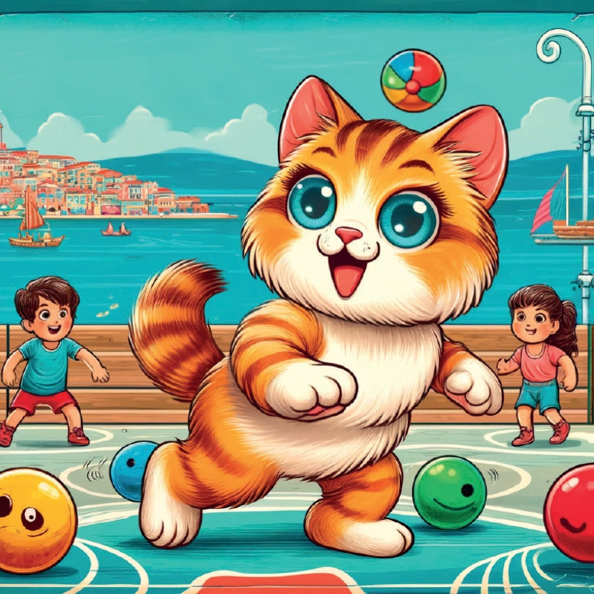
9
Regiunea Mediteraneană - Antalya:
Jocul cu Bățul
În Antalya, Karamel a descoperit
jocul de Çelik Çomak.
A urmărit cum copiii lovesc abil
un băț mic cu
unul mai mare, încercând să obțină puncte.
10
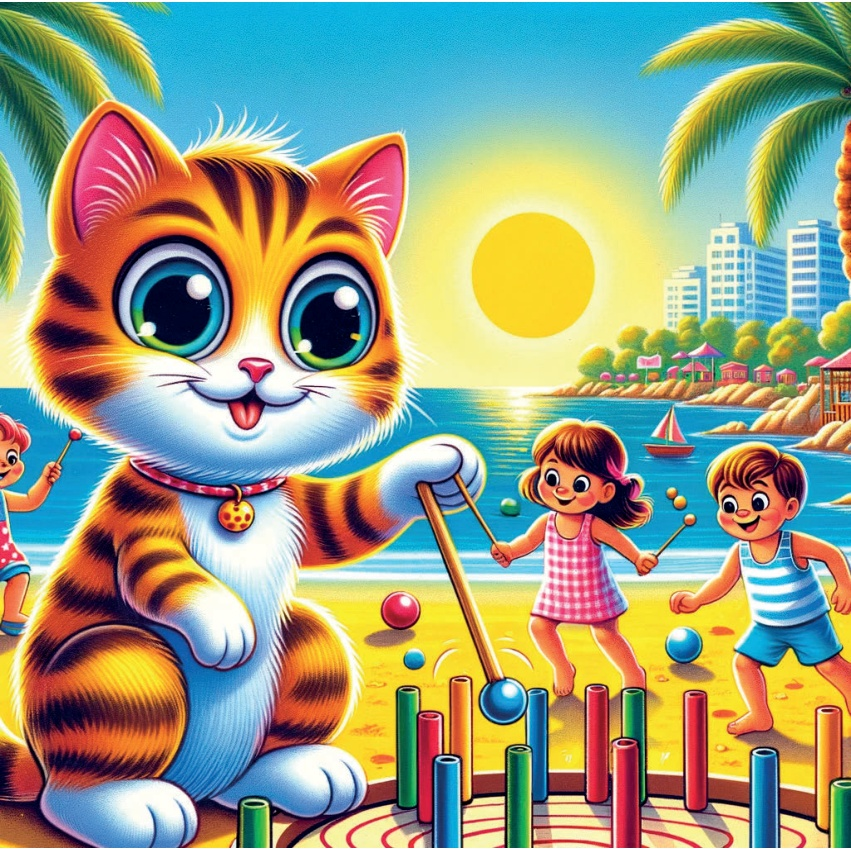
11
Ankara, Anatolia Centrală:
Hopscotch
Karamel a călătorit apoi la Ankara,
unde s-a alăturat copiilor care jucau Seksek.
A sărit pe pătratele desenate
pe pământ, bucurându-se
de provocarea jucăușă.
12
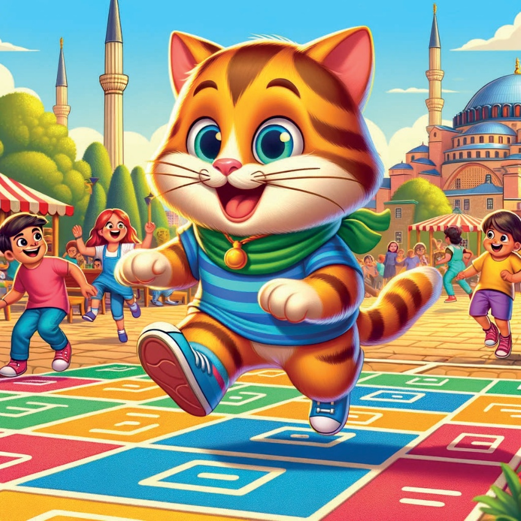
13
Regiunea Mării Negre - Trabzon:
Prinderea Mefoanței
În Trabzon, Karamel a participat la Mendil Kapmaca.
Copiii erau rapizi și competitivi, încercând să prindă
mefoana prima dată
și să se întoarcă la echipa lor.
14
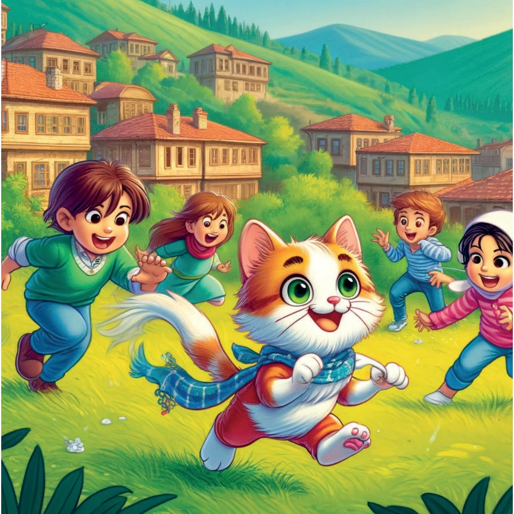
15
Anatolia de Sud-Est - Diyarbakır:
Jocul cu Oase
Oprirea următoare a lui Karamel a fost Diyarbakır,
unde a observat copiii jucând
Aşık Oyunu, un joc folosind oase degetului mare.
Copiii au demonstrat o abilitate remarcabilă
și strategie.
16
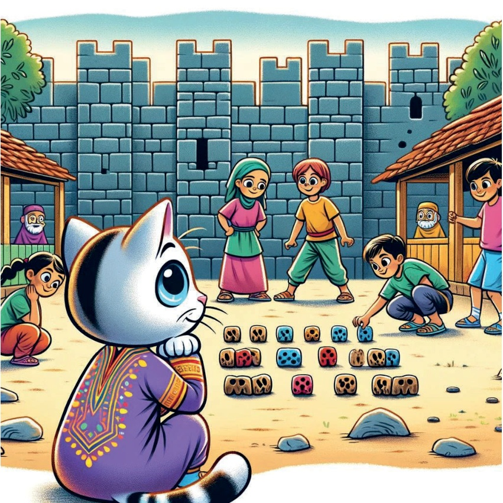
17
Anatolia de Est - Ardahan:
Birdirbir
În timp ce explora Anatolia de Est,
Karamel a dat peste un grup de copii
care jucau un joc tradițional numit Birdirbir.
Curioasă, a decis să se alăture lor.
Jocul implica sărirea peste un copil aplecat
și strigarea "Birdirbir!" la fiecare săritură.
Spiritul jucăuș și agilitatea lui Karamel
o făceau steaua jocului,
pe mult încântarea copiilor.
18
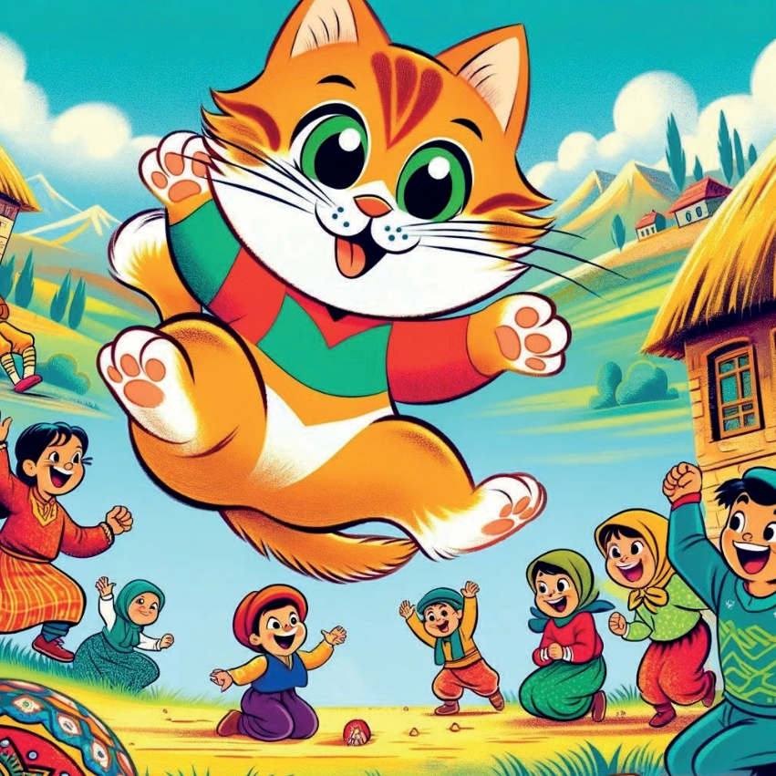
19
Cu inima plină de bucurie după ce a jucat și a învățat despre jocurile tradiționale, Karamel a realizat cât de mult aceste activități aduc copiii împreună. S-a întors acasă, visând la următoarea sa aventură jucăușă.
20
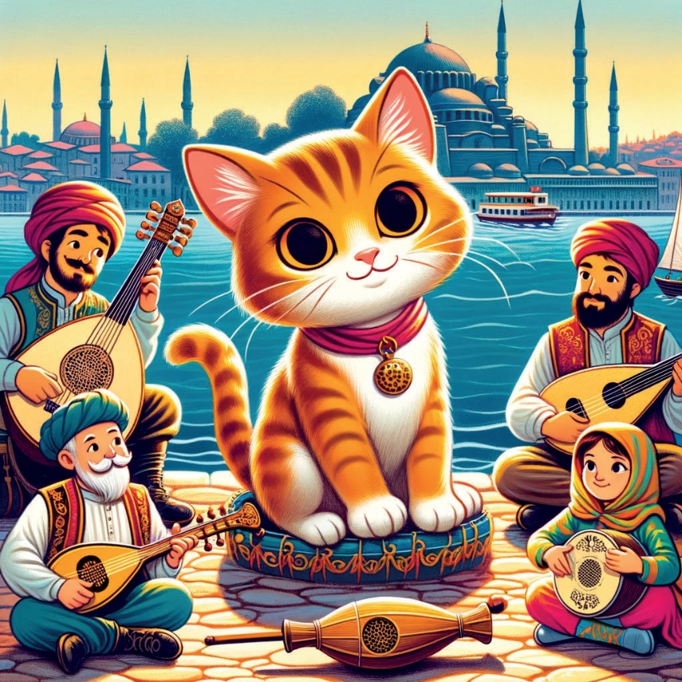
21
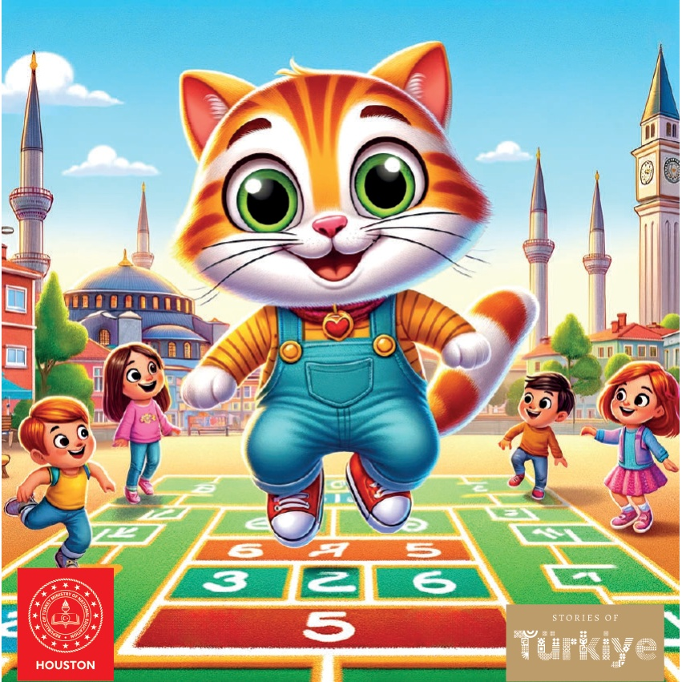
22